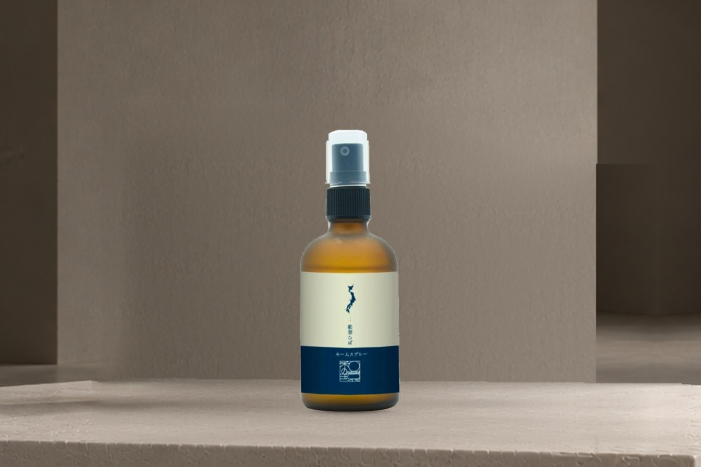
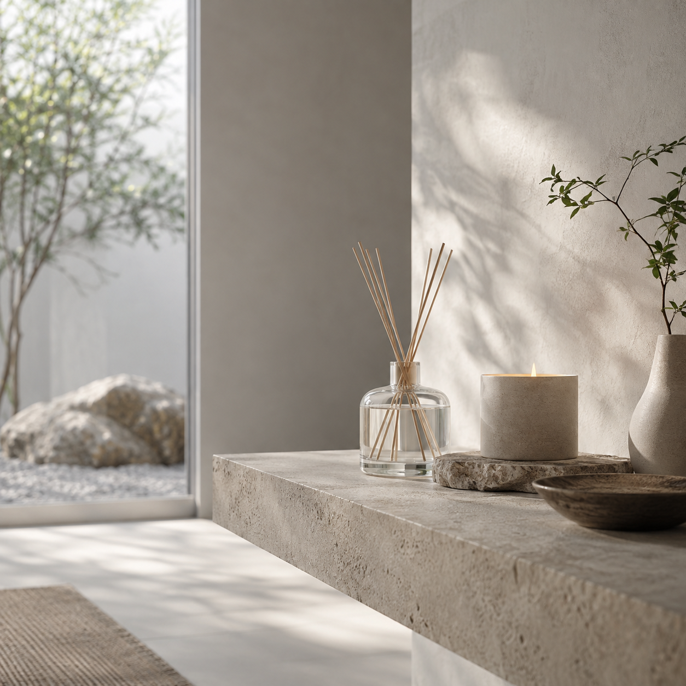
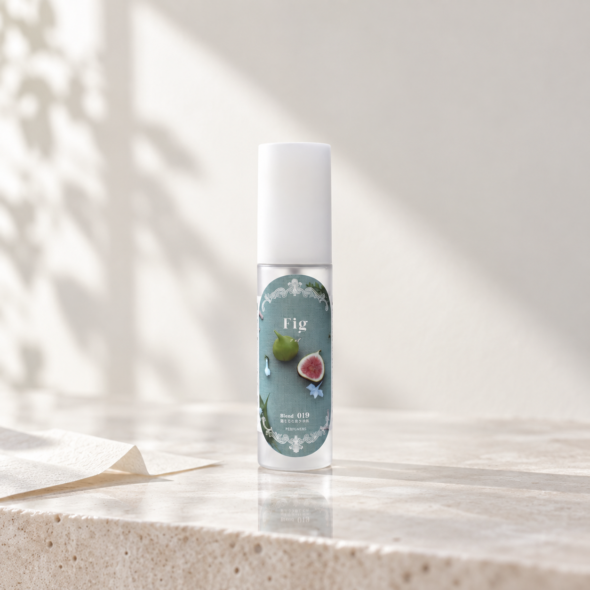
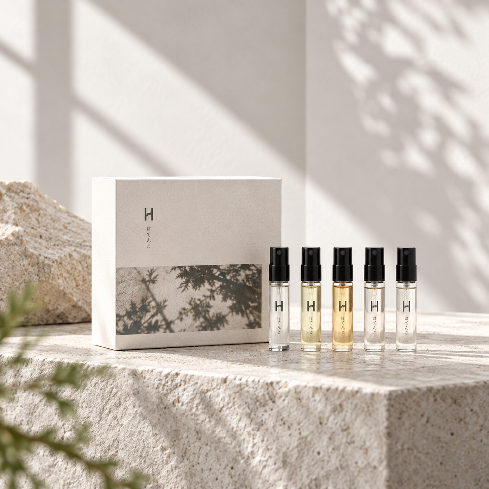

INIMU / FIND BY ITEM
Three quiet entrances
A / 空間を先に見せる
ONE SPATIAL IMAGE / FOUR CATEGORIES

空間の奥行きを最初に見せ、下部のカテゴリーを静かな目次として配置する案。
B / 空間から導線へ
IMAGE + VERTICAL INDEX

A PLACE TO BEGIN
香りを探す
入口。
写真を商品広告にせず、余白のある展示空間として扱い、カテゴリーを右側の静かなインデックスにする案。
C / 余白をナビゲーションにする
TEXT-LED / SMALL MATERIAL CUES
A QUIET INDEX
選ぶ前の
余白。
写真を主役から外し、文字と間隔でカテゴリーの違いを伝える案。小さな商品素材は識別の手がかりだけに留める。



比較用プレビューのみ。既存のローカル素材を使用し、本番SHOP・商品写真・カテゴリー構成は変更していません。空間写真は商品カテゴリーの代替ではなく、入口の世界観を伝えるために使用しています。